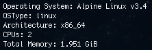
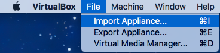
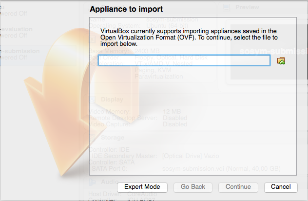
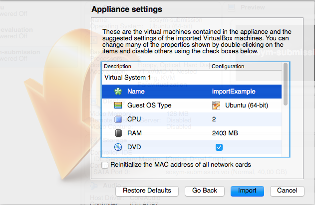
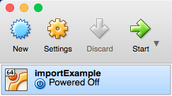
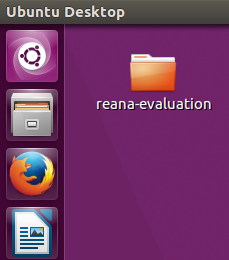
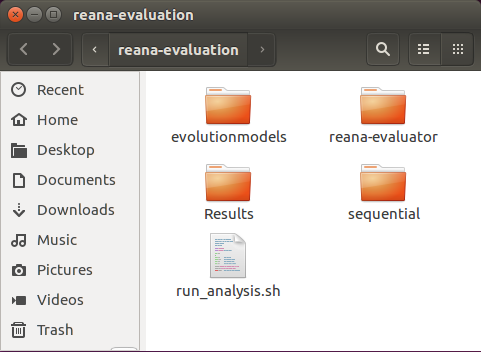

Feature-Family-Based Reliability Analysis of Software Product Lines
This work is being developed in a jointly effort of researchers of the following universities 


For those whom are interested in replicating our experiment, we provide two alternative environments containing the ReAna-SPL tool, the artifacts of all evaluated software product lines (including its evolutions) and the scripts for results analysis. In the first alternative the environment is packaged into a Docker container and its usage instructions can be found by clicking here. In the second alternative, the environment is packaged into an linux image suitable to be imported into VirtualBox manager. Its usage instructions can be found by clicking here.
Docker’s container
A public Docker repository containing the image of the experiment’s environment is available at Docker Hub. It can be accessed directly at the following URL: https://hub.docker.com/r/splmc/reana-spl/.
To execute the experiments you must download the environment’s image from ReAna’s repository, create a local container (taking the hosting machine’s characteristics into account) and execute the evaluation script inside the container. Each step is detailed in the following.
- Downloading the image from Docker Hub:
In order to download the image from Docker Hub, it is necessary having the Docker installed and running at the host machine. In case the host machine does not have the Docker Platform installed, you should follow the install instructions available here.
Once Docker platform is installed and running accordingly, you can download the image containing the experiment environment by typing the following instruction at a terminal of the host machine:
docker pull splmc/reana-spl:istSubmissionThe image’s size is around 526 MB, so the download may take some time depending on your connection speed.
- Creating the container:
Before creating the experiment’s container it is approppriate to know which are the host’s resources. Docker platform provides the following command for showing such information at a terminal:
docker infoThe host’s characteristics considered for the experiment replication are the number of CPUs and amount of main memory. The command’s output shows such values according to the following picture.

Note 1: in case the host machine contains a hyper-thread processor, you
can consider the number of available CPUs as the double of the value shown by
the docker info command’s output.
Note 2: the Total Memory shown must not be entirely used by the experiment
container, so it does not imposes much pagination during the analysis execution.
Table 1 shows the environment characteristics where our experiment was executed and it comprises both host machine and container’s characteristics.
| Host machine | Docker container | |
|---|---|---|
| CPU model | Intel i5-4570TE, 2.70 Ghz | — |
| #CPU’s cores | 4 (hyperthreaded) cores | 4 cores |
| OS | 64-bit CentOs Linux 7 | Ubuntu 16.04 LTS |
| Main memory (Gb) | 8 Gb | 6 Gb |
Table 1: specifications of host machine and the experiment container.
Our experiment environment used 100% of available CPUs and 75% of the main memory. Such values must be taken into account when replicating the experiment, so the replication container resembles our experiment environment as much as possible. To create the container from an docker image and define how it uses the host’s resources you should execute the following instruction at a terminal replacing the values between [ and ] by the appropriate values.
docker run -dt
--cpuset-cpus [min-max]
--memory [amount unit]
--name [name]
[image:tag]
/bin/bashExample: for creating a docker container named scalabilityAnalysis similar
to the described by Table 1, the instruction for creating it would
be:
docker run -dt
--cpuset-cpus 0-3
--memory 6Gb
--name scalabilityAnalysis
reana-spl:istSubmission
/bin/bash- Running the evaluation script:
Once the experiment container had been created from docker image, the next step
is to execute the script that triggers the reliability analysis of the software
product lines. To access the containers’s terminal, execute the following
instruction from host’s terminal, replacing [name] by the container’s name you
provided the previous step:
docker exec -ti [name] /bin/bashExample: considering the previous example, the command line for accessing the created container would be:
docker exec -ti scalabilityAnalysis /bin/bashThe file run-analysis.sh (inside the experiment’s folder /reana-evaluation
the root folder) contains the experiment script for performing the analysis of
software product lines. Such script may receive a value for the --times
parameter to define how many times each analysis strategy will be executed for
each evolution of each software product line. In absence of this parameter the
evaluation script assumes 10 as default number for iterations. The instructions
for accessing and starting the evaluation script are shown below.
root@90c8d1e0e689:/# cd reana-evaluation/
root@90c8d1e0e689:/reana-evaluation# ./run_analysis.sh Note 3: the container will always start a root session.
Note 4: each created container will receive an id (in the example above
the container’s id is 90c8d1e0e689). Such value will be different for the
container that you will create.
The script will execute all analysis performed for the software product lines and their evolutions presented at the paper. As it may take a long time to finish it is recommended choosing a reasonable number of iterations for the execution of the strategy analysis. In order to execute the statical analysis, the number of iterations can not be less than 8.
- Getting the analysis results
As soon as the evaluations of all software product lines finish the statistical
analysis takes place for summarizing the analysis’ results, applying the
suitable statistical tests and outputs its results by graphs and a report. Such
resuts are grouped by software product lines and show how each analysis strategy
demands time and space as the software product line evolves. All results of
statistical analysis are packaged at the file results.tar.bz inside the
reana-evaluation folder.
In order to view its content it is necessary copy results.tar.bz file to the
host machine and extract its content. The file transfer from the experiment
container to the host machine is accomplished by the instruction shown below. In
a host’s terminal type the following instruction, replacing [name] by the
container name:
docker cp [name]:/reana-evaluation/results.tar.bz .Example: considering out container example, the command line for copying the results to the host machine would be:
docker cp scalabilityAnalysis:/reana-evaluation/results.tar.bz .After the file transfer finishes, the file results.tar.bz will be available at
your working directory. With the extracting tool of your preference, you must
open and extract the file. The results will for each software product line will
be available in its own folder.
Linux image
Another alternative for the experiment replication is by using the environment image we created for VirtualBox, a virtual machine manager provided by Oracle©. To use this alternative it is necessary having a host machine with VirtualBox installed and a copy of the environment image. In case it is necessary installing VirtualBox, its binaries for different platforms can be downloaded from here. The installation instructions are available here.
Next we present the steps for importing the replication environment into VirtualBox and running the experiment script.
- Downloading and importing the Linux image into VirtualBox©
The Linux image containing the replication environment is available at the
repository created for this paper submission. To download the image file,
please refer to the file named replicationEnvironment.tar.bz at GitHub
repository or simply click here.
After downloading the replicationEnvironment.tar.bz file it is necessary
extract its content using the decompression tool of your preference. The
extraction’s result is a file named reana-replicationEnvironment.ova. This
file is now ready to be imported to VirtualBox Manager tool.
To import the image into VirtualBox, choose the Import appliance option from
the File menu, as shown below.

The path for the reana-replicationEnvironment.ova file must be provided at the
new window, as shown by the figure below. After informing the file path, click
on “Continue” to proceed.

In the next screen, represented by the figure below, VirtualBox will show you the characteristics of the virtual machine you are creating. The values for each characteristic, in special the number of CPUs and memory, must be changed considering the hosts machine resources. In our experiments we used 100% of CPUs (considering the hyperthreaded cores) and 75% of the memory – please refer to Table 1. Thus, you should consider such values for resources usage when creating your virtual machine so it resembles our experiment environment as much as possible.

The next step will be the conclusion of the virtual machine import. When it is finished, the virtual machine will be ready to be executed.
- Executing the evaluation script
After importing the environment image into VirtualBox, a new virtual machine (named according to the value informed at last step) is available to be used. To start the virtual machine, select it from the list of available virtual machines and click at “Start” button. The figure below depicts this step.

In the Virtual Machine’s desktop there is a folder named reana-evaluation, as
shown by the figure below. It contains all artifacts needed for replicating our
experiment, so it comprises all the software product line’s models, the analysis
tools and the scripts for the analysis automation.

The file run_analysis.sh inside the reana-evaluation folder contains the
script for automating the reliability analysis of the software product lines.
Thus, it role is to trigger the execution of the ReAna-SPL tool and, when all
analysis finish, it groups the results of each software product line and perform
the statistical tests. The results (graphs and report) will be available at the
folder Results.

The default number of analysis iterations for each strategy/software product
line is 10. However, such value can be changed by assigning a value for the
parameter --times. For executing the automation script, in a terminal of the
virtual machine you should type the following commands
cd ~/Desktop/reana-evaluation
./run_analysis.shIn case you want to define the number of analysis iterations, you need change
the last command, by adding the --times parameter, as shown below:
./run_analysis.sh --times XXwhere XX is the number of iterations.
Note 5: although the --times parameter can assume an arbitrary positive integer
value, it must must be greater than 8 in order to allow drawing valid
conclusions from the statistical analysis.
Note 6: due the number of software product lines (and its evolutions), the
analysis strategies and the time required for each combination analysis/software
product line, it is recommended choosing a reasonable value for --times
parameter so it answers in a practical time.